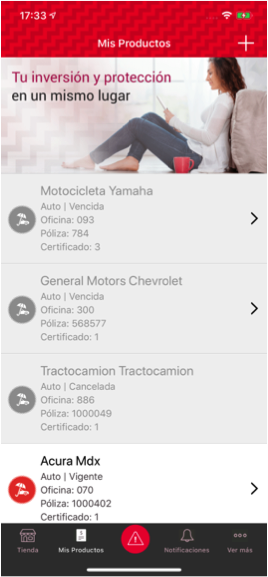

Conoce Más
Descubre las funcionalidades con las que cuenta nuestra App Seguros Banorte
Beneficios


Todo sobre la APP
Es una aplicación de software que se instala en los teléfonos celulares, y permite acceder a pólizas registradas por el usuario, permitiendo a éste tener diferentes herramientas para llevar un mejor control de sus seguros, así como reportar siniestros, compartir ubicación y dar seguimiento al reporte.
La APP está disponible en Google Play o Apple Store.
Es necesario tener los datos actualizados para ingresarlos al sistema. Para registrarte, es necesario:
Hacer clic en Registrarme.
-
-
Aceptar términos y condiciones.
-
-

La app permite el registro de pólizas, con esto el cliente tendrá a la mano el detalle de vigencias y coberturas, y le será más sencillo reportar un siniestro. Para registrar una póliza, sigue estos pasos:
En la pantalla de inicio, haz clic en el botón Mis Productos.
Tras seleccionar el ramo de tu interés, sigue estos pasos para registrar tu póliza:
Ingresa Número de Póliza, Número de serie (últimos 5 dígitos) y color de vehículo. Haz clic en Registrar.
Al terminar el registro, se mostrará el aviso de Registro exitoso. Haz clic en Listo.
En la pantalla Mis Productos, podrás encontrar las pólizas que has registrado.

Para reportar un siniestro, selecciona el botón alerta.

Elige el tipo de siniestro a reportar.
Completa los datos para la atención y haz clic en Continuar.
Indica el lugar del siniestro y envía el reporte.

Revisa el nombre del ajustador y el tiempo estimado de llegada.
Al haber hecho el reporte, puedes dar a conocer a otros la ubicación del siniestro, seleccionando la opción Compartir Ubicación.


Para solicitar asistencia, presiona el botón alerta.

Elige el tipo de atención a solicitar.
Una vez solicitada la atención, completa los datos que te son requeridos y haz clic en Continuar.
Recuerda que durante el año de vigencia de tu póliza cuentas con 2 eventos por servicio.
Selecciona el ramo de tu interés, y sigue estos pasos para registrar tu póliza:
Haz clic en el botón Gastos Médicos Mayores.
En la pantalla que se muestre, ingresa Número de Póliza, Nombre (como aparece en la póliza), Fecha de nacimiento y haz clic en Registrar.
Al terminar el registro, se mostrará el aviso de Registro exitoso.Registro exitoso.
En la pantalla Mis Productos, podrás encontrar las pólizas que has registrado.
Para registrar una póliza, haz clic en el ramo y sigue estos pasos:
Ingresa Número de Póliza, RFC con homoclave. Haz clic en Registar.
Al terminar el registro, se mostrará el aviso de Registro exitoso. Haz clic en Listo.
En la pantalla Mis Productos.podrás encontrar las pólizas que has registrado.

Para registrar una póliza, haz clic en el ramo y sigue estos pasos:
Ingresa Número de Póliza, Número de certificado o inciso y RFC. El nombre del asegurado es opcional, haz clic en Registar.

Al terminar el registro, se mostrará el aviso de Registro exitoso.Haz clic en Listo.

En la pantalla Mis Productos,Hpodrás encontrar las pólizas que has registrado.

Existen otras formas de registro de pólizas, éstas son
Código Registro
Registra tu código de registro, en la parte superior de la pantalla y haz clic en Registar.

Dentro del resumen de la póliza, haz clic en el icono de descarga, ubicado en el extremo superior derecho.

En el menú que se muestre, presiona Descargar.
Al descargarse la póliza, has clic en Aceptar. También recibirás una copia en tu correo electrónico registrado.

Podrá revisar la póliza en PDF, si deseas compartir, haz clic en el icono.
La app permite ver la credencial de GMM de manera electrónica y puede exportarse al administrador de credenciales del dispositivo. Para exportar la credencial sigue estos pasos:
En la pantalla de Mis Productos, haz clic en tu seguro de Gastos Médicos.

Al dar clic, podrás revisar tu credencial electrónica.

Tienes la opción de girar la credencial para ver el reverso.

O descargar para tener en tu equipo móvil.

La App permite la descarga en PDF de las facturas en el dispositivo y el envío por correo de las facturas disponibles de recibos pagados (PDF y XML).
Para descargar éstas, haz clic en la pestaña Mis Productos, y selecciona el pago en la sección Mis Recibos Pagados.

Presiona el botón Ver Factura/Compartir para continuar con el proceso, o haz clic en Cancelar para detener éste.

Tienes la opción de girar la credencial para ver el reverso.
Presiona el icono para compartir la factura.
Para enviar las facturas al correo electrónico del usuario, debe hacerse clic en la pestaña Mis Recibos, a la sección final de Mis Recibos Pagados y presionar el botón Descargar Facturas.
Al seguir la ruta, serán enviados al correo del usuario las facturas.
Ponla en Marcha